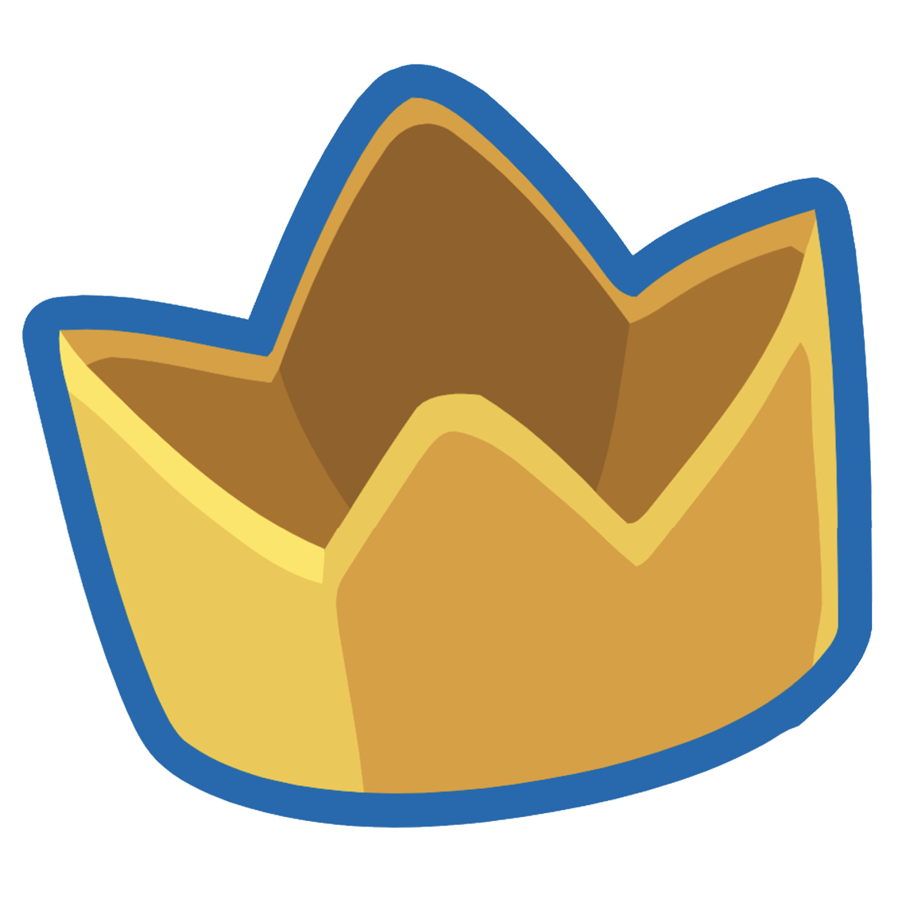

Lioka "Lioko" A.
Joueur chez Orbital Sheep
Lioka A. commence à jouer aux jeux vidéos de manière compétitive à l'âge de 15 ans. Sa carrière de joueur esport ne l'empêche pas de continuer les études en parallèle, année de césure après le Bac une période sombre pour lui avant de s'engager en service civique. Il choisit le pseudonyme "Lioko" en rapport avec son prénom "Lioka" car il aimait bien la prononciation avec un "o" qui faisait un peu espagnol. Il aime particulièrement les personnages drôles et atypiques pour les nombreuses variantes d'options qu'ils possèdent.
Orbital Sheep
Orbital Sheep est une association créee en 2015, qui est active sur le jeu Super Smash Bros Ultimate depuis juin 2022 ! Depuis plus d'un an, ils organisent les Weeklys SSBU à Paris, ils soutiennent leurs joueurs et essayent de faire progresser la scène smash française.
Roi du Double
Lioko est aussi un excellent joueur en 2V2, il adore participer à ce mode de jeu dans les side event des tournois et à de très bonnes victoires, comme Gluto/Mezcaul, Raflow/Eko, Homika/Ludo, etc...
Mates récurrents :
Sokuda

Joueur du 95
Meilleur Roi Dadidou
FR actuel
Katascient
Martin D.
Joueur bordelais
Ancien meilleur Steve français, retiré de la compétition
Huzento
Joueur Dijonnais
Très bon Snake
Online à l'époque
TBN
Vincent A.
Joueur essonien
Très solide
Une des meilleures Palutena FR